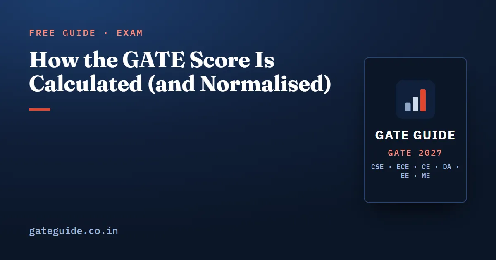

How the GATE Score Is Calculated (and Normalised)

Your GATE scorecard carries two numbers: marks out of 100 and a score out of 1000. The second is produced from the first by a published formula, and for papers held in more than one session there is a normalisation step before that. Both formulas are printed in the official GATE 2027 information brochure. This guide reproduces them, defines every symbol, and works one example with marks invented purely to illustrate the arithmetic.
In this guide
Key takeaways
- The GATE score maps your marks onto a fixed scale: the qualifying mark becomes 350 and the top-performer average becomes 900.
- For multi-session papers, raw marks are converted to normalised marks first, using each session's own reference points.
- Normalisation assumes candidate ability is spread the same way across sessions, because allocation to sessions is random.
- The qualifying mark for the General category is capped between 25 and 40 by the brochure formula.
- Nothing here can be computed before the exam, so any score predicted in advance is guesswork.
Step 1: normalisation for multi-session papers
The brochure states that some GATE 2027 test papers may be conducted in multiple sessions, and that a normalisation is applied "to take into account any variation in the difficulty levels of the question papers across sessions". The stated justification is that the number of candidates in multi-session papers is large, allocation to sessions is random, and the number of candidates per session is comparable — so the distribution of ability can reasonably be assumed to be the same in each session.
The official formula, for the normalised marks of the th candidate in the th session:
where, as the brochure defines them:
| Symbol | Official definition |
|---|---|
| the actual marks obtained by the th candidate in the th session | |
| the average marks of the top 0.1% of the candidates considering all sessions | |
| the sum of the mean and standard deviation marks of the candidates in the paper considering all sessions | |
| the average marks of the top 0.1% of the candidates in the th session | |
| the sum of the mean marks and standard deviation marks of the th session |
Read structurally, the formula does one thing: it takes the interval between your session's two reference points and stretches or squeezes it onto the interval between the same two reference points computed over all sessions. If your session's top performers scored lower than the overall top performers, your session's interval is narrower, and marks inside it get scaled up.
Step 2: the GATE score formula
Once marks are settled — raw marks for a single-session paper, normalised marks for a multi-session one — the score is computed for every paper by the same formula:
with the brochure's definitions:
| Symbol | Official definition |
|---|---|
| the marks obtained by the candidate (actual for single-session papers, normalised for multi-session papers) | |
| the qualifying marks for the General Category candidate in the paper | |
| the mean of marks of the top 0.1% or top 10 (whichever is larger) of the candidates who appeared in the paper | |
| the score assigned to | |
| the score assigned to |
And the qualifying mark itself, from the same section:
where is the mean and is the standard deviation of the marks of all candidates who appeared for that test paper. OBC-NCL and EWS qualifying marks are of the General value; SC, ST and PwD qualifying marks are of it. More on what those thresholds do, and what they do not do, in GATE CSE qualifying marks and cutoffs explained.
One detail worth noticing: in the normalisation formula is defined as mean plus standard deviation, with no floor or ceiling, while the qualifying mark in the score formula is that quantity clamped between 25 and 40. They are related but not the same symbol, and the brochure keeps them separate.
A worked example (invented marks)
Everything below is made up to show the arithmetic. These are not real GATE figures and they are not a prediction.
Suppose a paper is held in two sessions, and after evaluation:
- Across all sessions: average of the top 0.1%, ; mean + standard deviation,
- Session 1 (turned out easier): session top-0.1% average, ; session mean + standard deviation,
- Session 2 (turned out harder): session top-0.1% average, ; session mean + standard deviation,
Two candidates each score raw 58 marks, one in each session.
Session 1 candidate:
Session 2 candidate:
The same raw 58 becomes 55.51 from the easier session and 61.61 from the harder one. Now feed those into the score formula, taking the example qualifying mark as 30 and the overall top-0.1% average as 82:
For comparison, a single-session paper with the same reference points would send a raw 58 straight through: . Again — illustrative numbers only.
What this means for how you prepare
The formulas are fixed, but every quantity in them is decided after the exam. That has three practical consequences.
You cannot game your session. Which session you sit is not your choice, and the normalisation exists precisely so that it should not matter. Worrying about "shift difficulty" before the exam is effort spent on the one variable you have no access to.
Marks near the top are worth disproportionately more score. The map from marks to score is linear, but the population is not: the gap between 55 and 65 marks covers far more candidates than the gap between 75 and 85. Every extra mark in the middle of the distribution moves you past many more people than it does at either end.
Negative marking is expensive twice over. A wrong MCQ costs you the mark and then costs you again in the conversion. The brochure's rule for the CS paper is on a 1-mark MCQ and on a 2-mark MCQ, with no negative marking on MSQ or NAT. MCQ, MSQ and NAT strategy for GATE CSE works through when a guess is worth it and when it is not.
The one thing you can control is the marks column. Tracking it honestly across full-length attempts is the point of GATE CSE mock tests and how to analyse them. Each GATE 2027 book includes 10 full mock tests built to the official 65-question, 100-mark pattern, so the number you are watching is measured the same way the real paper measures it.
Common misreadings
- "Normalisation is moderation." It is not. No marks are added or removed by hand; a published linear map is applied using statistics of the actual sessions.
- "Score out of 1000 means 1000 is achievable." The scale is anchored so the top-performer average maps to 900. Scores above that exist but are rare by construction.
- "My score should match a calculator I found online." Any such tool needs and for that year's paper, which are only known after the result. Before then, it is fitting last year's constants to this year's marks.
- "Marks and score rank me differently." Within one paper and one year the map is monotonic, so higher marks mean a higher score. Comparisons across years or papers are what the scale is there for.
For how the paper is structured before any of this arithmetic begins, see the GATE CSE 2027 exam pattern and marking scheme.
GATE Guide is an independent site and is not affiliated with IIT Madras, IISc or GATE. The formulas above are reproduced from the official GATE 2027 information brochure; verify them at the official website before relying on them.
Frequently asked questions
How is the GATE score calculated out of 1000?
The brochure formula is , where is your mark, the qualifying mark and the mean of the top performers. is 350, assigned to the qualifying mark, and is 900, assigned to the average of the top 0.1 percent or top 10 candidates.
What is normalisation in GATE?
When a paper is held in more than one session, raw marks from different sessions are converted to normalised marks before the score is computed. The stated assumption is that candidate ability is distributed similarly across sessions, because allocation to sessions is random and the number of candidates per session is comparable.
Is the GATE CS paper normalised?
The CS paper has been held in multiple sessions in recent years, and normalisation applies to any multi-session test paper. Whether GATE 2027 CS runs in one session or more is announced with the examination schedule, so check gate2027.iitm.ac.in rather than assuming. Single-session papers use raw marks directly.
Does normalisation help if my session was harder?
That is what it is designed to do. The formula rescales each session using that session's own top-performer average and its own mean-plus-standard-deviation reference point, so a mark from a tougher session maps to a higher normalised mark than the same raw mark from an easier session.
Can a GATE score be negative?
Yes. The official GATE FAQ notes that a candidate may receive a negative GATE score even with positive marks. The score formula maps the qualifying mark to 350 and scales linearly, so marks far below the qualifying threshold fall below zero on that scale. It is not an error.
What is the difference between GATE marks and GATE score?
Marks are out of 100 and reflect your raw performance, after normalisation where it applies. The score is out of 1000 and places those marks on a scale anchored at 350 for the qualifying mark and 900 for the top-performer average. Admission and recruitment mostly use the score.
Sources
- GATE 2027 official website (IIT Madras)
- GATE 2027 Information Brochure (official PDF)
- GATE 2027 FAQs (official)
- GATE 2026 cut-off marks (IIT Guwahati, official)
Dates, fees and the syllabus are set by the GATE 2027 organising institute and can change. Always confirm at gate2027.iitm.ac.in.